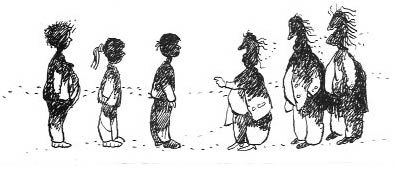

“Eveeet... Her ülge için öyle sadece, yannız Türkiye için deeel. İngiltere üçün de Fransa üçün de özelliklen Amariga üçün de. Deel mü argadaşlar?” diye arkasındaki sarışın iki adamına döndü Haşmet Efendi. Onlar ne konuşulduğunu pek anlamamalarına karşın sırıtarak kafalarını salladılar.
Erim,
— Ne arıyorsunuz burada?
— Sizin aradığınızı. Ben aslında paranın peşindeyüm emme bu argadaşlar çok ilgilü arkeolojiklen, değil mi Nicholas, deel mi David?
.
İki adam ilerlediler, gençlerin ellerini ve ayaklarını bağlamaya başladılar. Samatya’daki köşkün kapısında dik dik bakıştıkları Nicholas, Erim’in ellerini bağladı. Erim gözünü yine ayırmadı Nicholas’tan, o da gözünü onun gözlerine dikti, sanki acıtmak için daha fazla sıktı bileklerini. Çok acımasına rağmen hiç belli etmedi Erim.
— O tombalak olanın sadece illerini bağlayun, ayaklarını bağlamaya gerek yohh, diye sırıttı Haşmet.
Anlamadıklarını fark edince de kendi bacağını ve Zafer’i gösterdi, elleriyle “Bağlamayın” hareketi yaptı, adamlar kafalarını salladılar.
— Bence sen daha fazla konuşma Haşmet Efendi, dedi Zafer.
— Niyeymüş gii?
— Bizim Türkçemiz de bozulacak senin yüzünden.
Erim ve Nisan püskürdü. Nisan eğildi,
— Aferin Bönbön, hepimize moral veriyorsun cesur dostum.
— Gelirsem ağzunu, burnunu eline verirüm la! Güleceğinize korkun artık.
Erim,
— Nasıl takip edebildiniz bizi buraya kadar?
— En iyi adamumuz sizi adım adım takip etti, ruhunuz bilem duymadı.
Nisan mırıldandı:
— Arap! Nasıl da inanmadık Sanem’e. Kimsiniz Allah aşkına siz? Kim bu adamlar?
— Artıkın bilmenizde sakınca yok; nasılsa konuşamayacaksınız. Nicholas, Fransa istihbaratından, David de İngiliz istihbaratından. Uzun zamandır bu eserlerin peşindeyüz. Asnen onnar 1906’da duymuşlar bunu, İstanbul işgalinde de çok aramışlar. Her yeri... Birünüzün babasıynan diğerinüzün dedesinü takip etmişler, servet neyin de teklüf etmişler dee öğrenememüşler miymüş ne...